Kolaskrarl Lubi
Posted on 13 August 2016
by Cliff
A hostile and cold planet with beautiful trees, rectangular mountains, and diverse fauna.
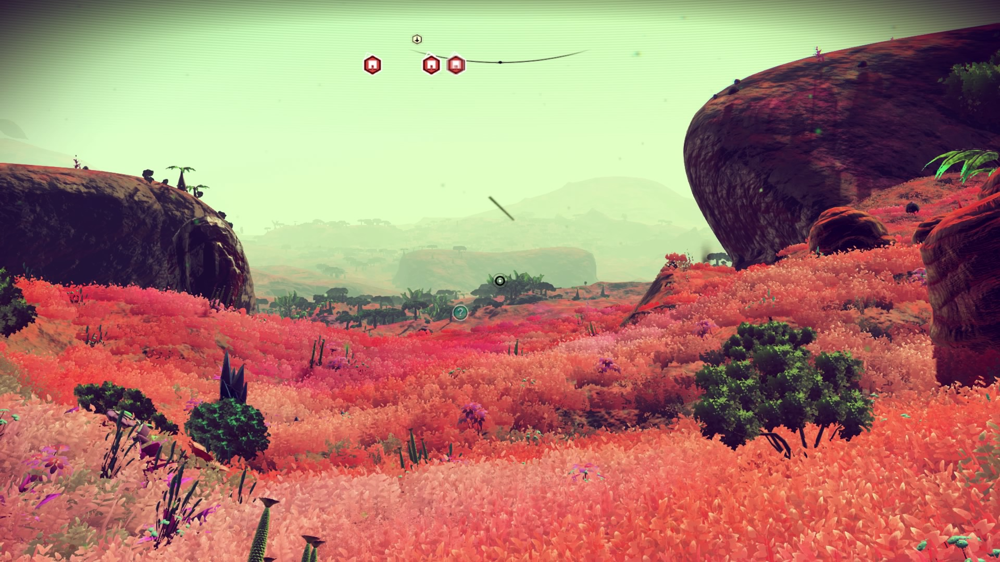
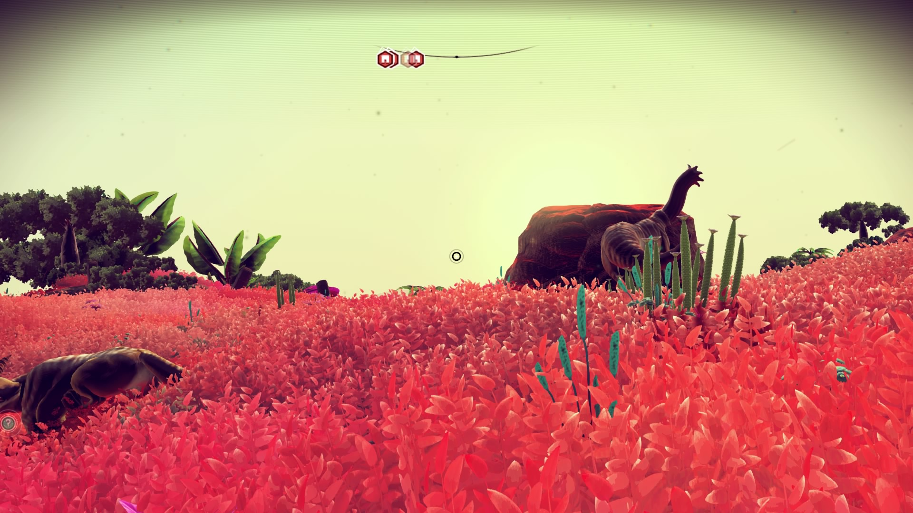
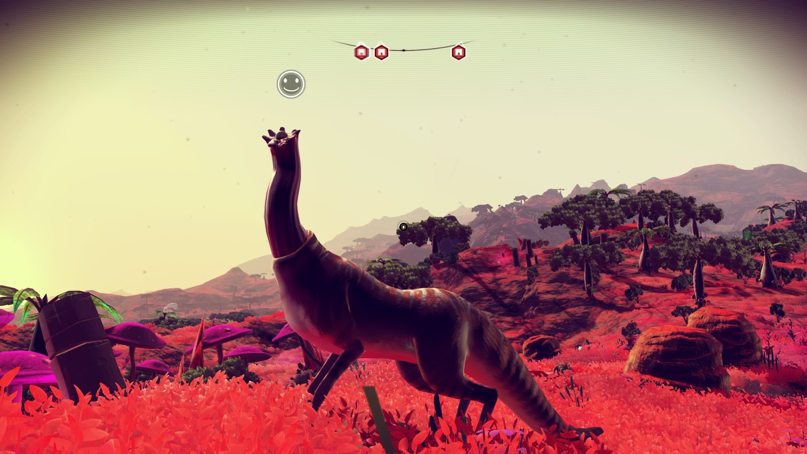
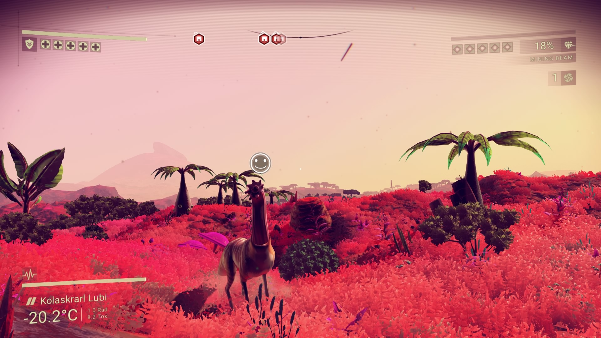
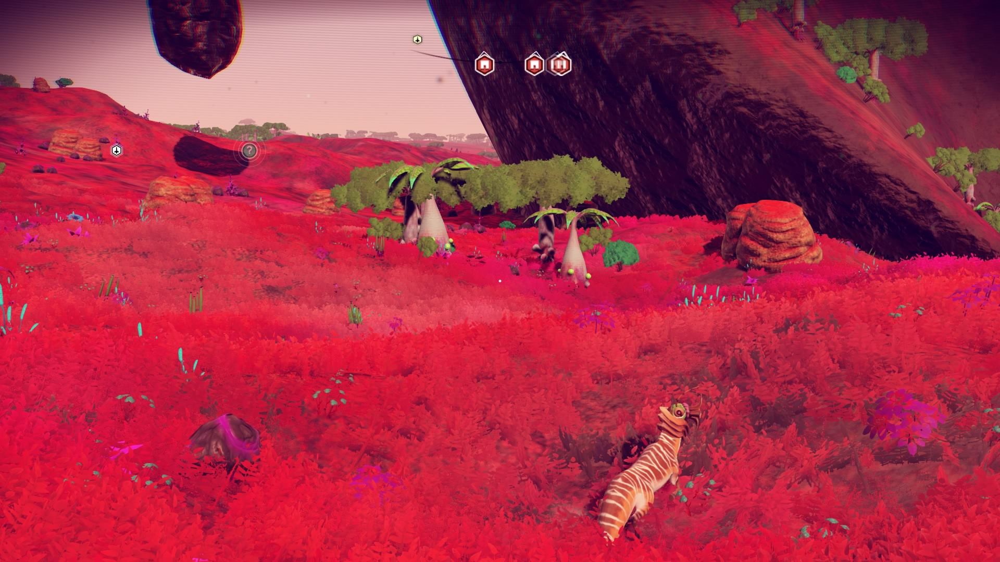
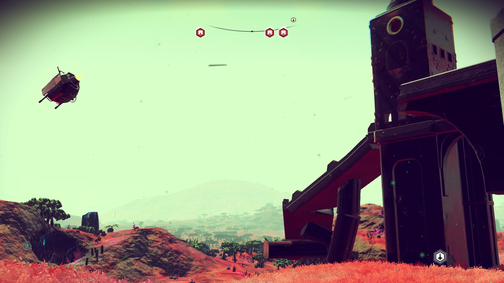
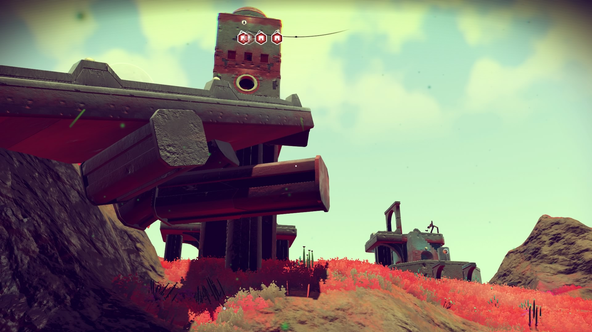
A hostile and cold planet with beautiful trees, rectangular mountains, and diverse fauna.
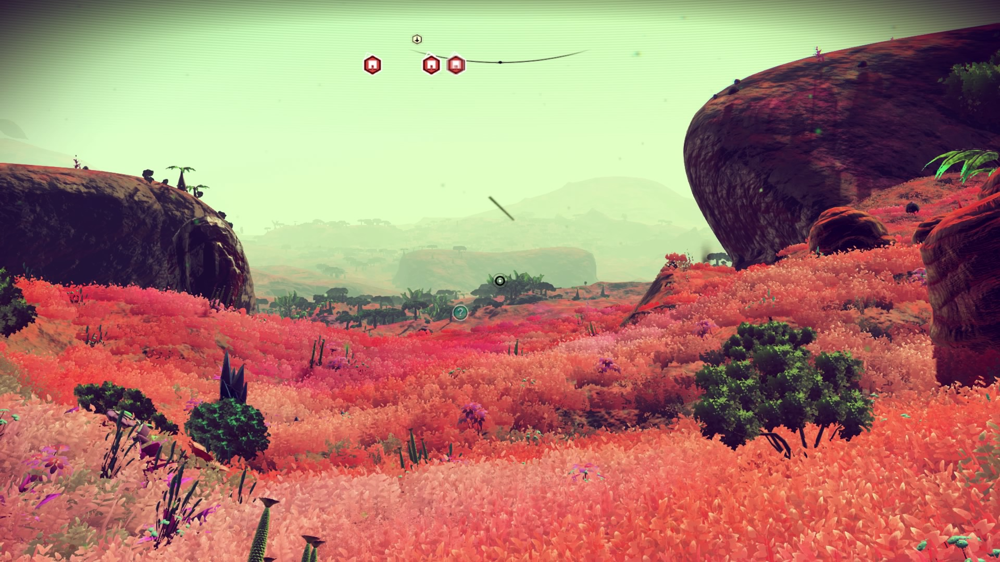
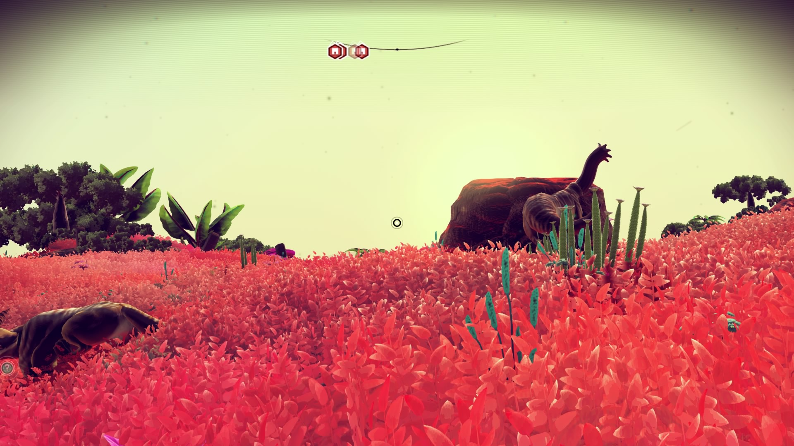
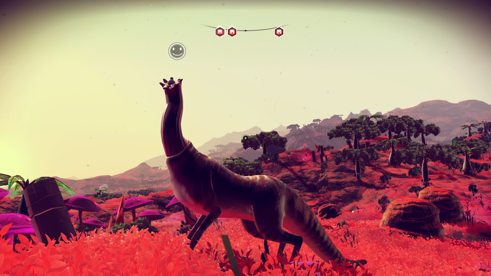
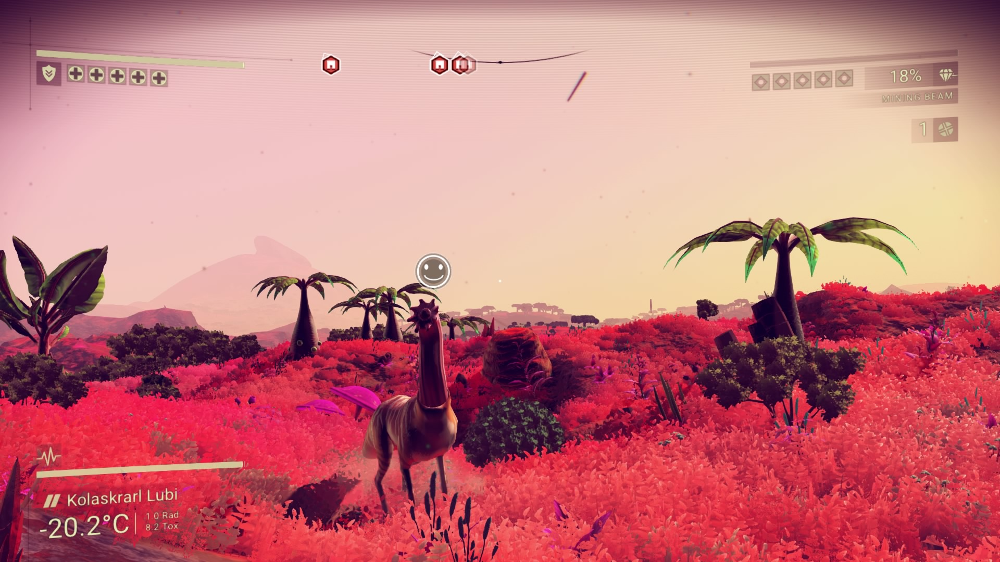
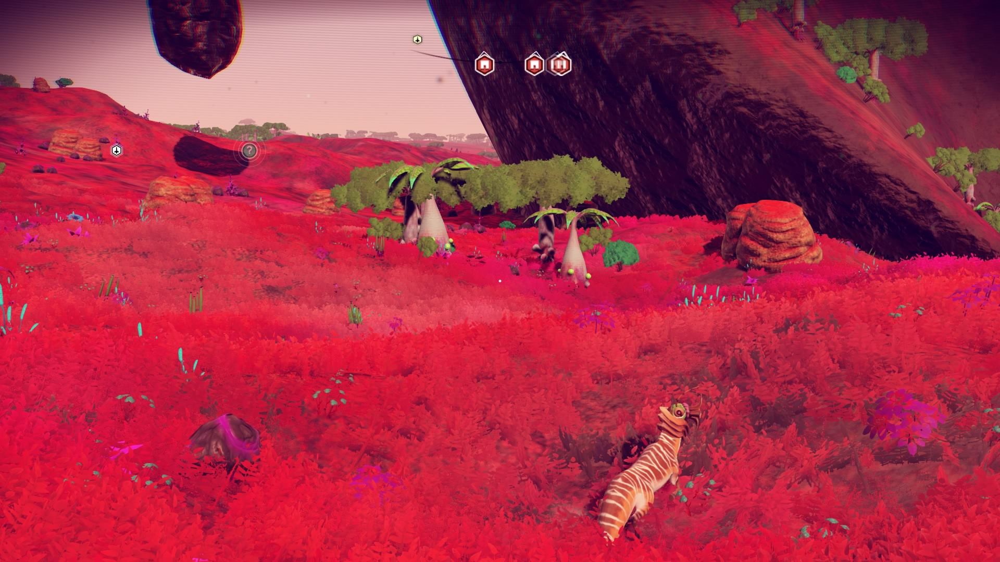
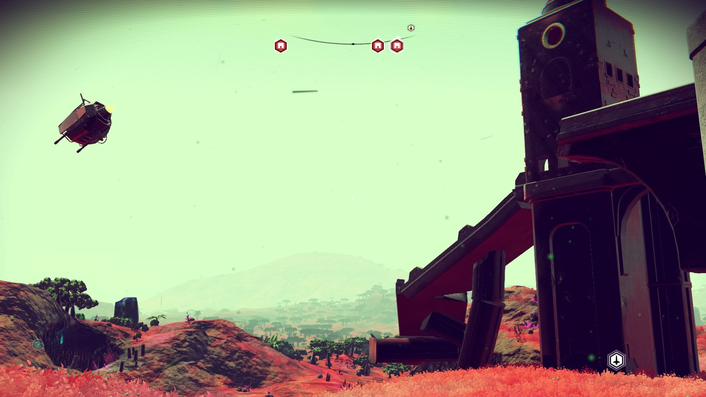
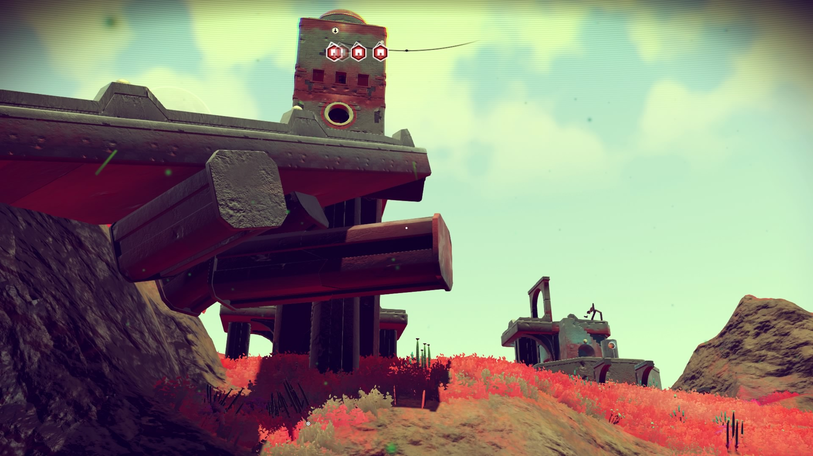